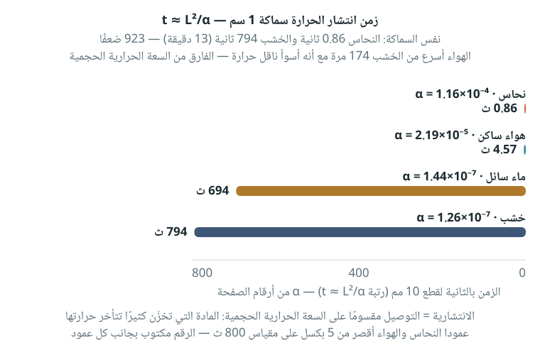

الانتشارية الحرارية
Thermal Diffusivity
خاصية مادة تقيس سرعة انتشار الحرارة فيها لا مقدارها: α = k/(ρ·c_p)، ووحدتها متر مربع لكل ثانية. النحاس 1.16×10⁻⁴ والخشب 1.26×10⁻⁷، فالفارق نحو ألف ضعف في زمن الاستجابة.
الانتشارية الحرارية تجيب سؤالًا مختلفًا عن التوصيلية: لا «كم حرارة تمرّ؟» بل «كم يسرع الجسم إلى تسوية حرارته؟». تُعرَّف α = k/(ρ·c_p)، حيث k التوصيلية الحرارية وρ الكثافة وc_p السعة الحرارية عند ضغط ثابت. البسط يقيس قدرة المادة على نقل الطاقة، والمقام يقيس قدرتها على تخزينها؛ فالمادة التي تنقل جيدًا وتخزّن قليلًا تنتشر فيها الحرارة أسرع.
لهذا لا تكفي التوصيلية وحدها للحكم على «الإحساس بالبرودة» أو على زمن استجابة حساس. مقبض معدني ومقبض خشبي في غرفة واحدة لهما درجة الحرارة نفسها، لكن α للنحاس أكبر بنحو ألف مرة من الخشب، فيسحب من الجلد حرارة أسرع فيحسّه اللمس أبرد. وفي التوصيل غير المستقر تظهر α صريحة في معادلة الحرارة ∂T/∂t = α∇²T، وهي التي تحدد ثابت الزمن لا k وحدها.
كيف تعمل الظاهرة؟
تنتقل الطاقة في المادة بفارق درجات، لكن سرعة تسوية هذا الفارق تعتمد على ما تفعله المادة بالطاقة الواصلة: إن خزّنتها ارتفعت حرارتها ببطء وامتصّت الفارق، وإن مرّرتها بسرعة انتقل الفارق إلى الطبقة التالية. المقام ρ·c_p هو «السعة الحرارية الحجمية» أي الطاقة اللازمة لرفع كلفن واحد في متر مكعب. لذلك يكون المعدن سريع الاستجابة لأن سعته الحجمية معتدلة وتوصيليته عالية، ويكون الماء بطيء الاستجابة لأن سعته الحجمية 4.18 ميجاجول لكل متر مكعب وكلفن، وهي من أعلى القيم بين المواد الشائعة.
العلاقة بالأرقام
للنحاس k = 401 واط/(م·كلفن) وρ = 8,960 كغ/م³ وc_p = 385 جول/(كغ·كلفن): α = 401/(8,960×385) = 1.16×10⁻⁴ م²/ث. وللخشب k = 0.15 وρ = 700 وc_p = 1,700: α = 1.26×10⁻⁷ م²/ث، أي أقل بنحو 920 مرة. وللماء k = 0.60 وρ = 998 وc_p = 4,182: α = 1.44×10⁻⁷ م²/ث. وللهواء الساكن k = 0.026 وρ = 1.18 وc_p = 1,005: α = 2.19×10⁻⁵ م²/ث — أي أن الهواء أسرع انتشارًا حراريًّا من الماء رغم أنه أسوأ توصيلًا، لأن سعته الحجمية أصغر بنحو 3,500 مرة.
مفاهيم متقاربة
الخلط الأول: مساواة الانتشارية بالتوصيلية. التوصيلية معدل نقل لكل تدرّج، والانتشارية معدل انتشار لكل تدرّج مقسومًا على السعة التخزينية؛ ولذلك يتقدّم الهواء على الماء في α ويتأخر عنه في k. الخلط الثاني: الظن أن α خاصية ثابتة؛ هي كذلك في المواد المتجانسة عند مدى حراري ضيق، لكنها تتغير مع الحرارة والرطوبة والكثافة في العوازل، وتصير موترًا في المواد المركّبة متباينة الاتجاه. والخلط الثالث: استعمال α بدل k في حساب الفيض المستقر — الفيض المستقر يعتمد على k وحدها، وα لا تدخل إلا حين يتغير الوضع مع الزمن.
حدود التطبيق
معادلة الانتشار تفترض وسطًا مستمرًّا وتوصيلًا خطيًّا، فتفقد معناها عند أزمنة أقصر من زمن استرخاء الفونونات، أي في النبضات الفمتوثانية وفي الأغشية الرقيقة جدًّا. وفي المواد الشفافة لا تصف α وحدها الانتقال لأن الإشعاع الداخلي ينقل الطاقة بآلية لا تعتمد على التدرّج. وفي الأجسام المسامية الرطبة يتغير α مع المحتوى المائي تغيرًا حادًّا، فلا تصلح قيمة جافة واحدة للتصميم. وأخيرًا في التدفق مع الحمل يغلب رقم بيكليه على α، فلا يصح استخدامها منفردة.

| الكمية | القيمة | المصدر |
|---|---|---|
| الانتشارية الحرارية للنحاس | 1.16×10⁻⁴ م²/ث | [1] |
| الانتشارية الحرارية للخشب | 1.26×10⁻⁷ م²/ث | [1] |
| الانتشارية الحرارية للماء السائل عند 20 °م | 1.44×10⁻⁷ م²/ث | [2] |
| الانتشارية الحرارية للهواء الساكن عند 20 °م | 2.19×10⁻⁵ م²/ث | [2] |
| السعة الحرارية الحجمية للماء | 4.18 ميجاجول/(م³·كلفن) | [2] |
المصادر
- 1 Thermal Conductivity of Common Materials and Gases — The Engineering ToolBox. www.engineeringtoolbox.com/thermal-conductivity-d_429.html · اطُّلع عليه 2026-11-21
- 2 University Physics Volume 2 — 1.6 Mechanisms of Heat Transfer — OpenStax. openstax.org/books/university-physics-volume-2/pages/1-6-mechanisms-of-heat-transfer · اطُّلع عليه 2026-11-21
استشهد بهذا المصطلح
الصيغتان مبنيتان من بيانات الصفحة نفسها: العنوان والتاريخ ورابط النسخة المنشورة.
الانتشارية الحرارية — Thermal Diffusivity. (2026). ديوان المعرفة — انفراد. https://infiradev.com/diwan/terms/thermal-diffusivity.html
@misc{thermal-diffusivity2026,
title = {الانتشارية الحرارية},
titleaddon = {Thermal Diffusivity},
howpublished = {{ديوان المعرفة — انفراد} — مرجع علمي عربي},
year = {2026},
url = {https://infiradev.com/diwan/terms/thermal-diffusivity.html},
urldate = {2026-11-23},
note = {مراجعة علمية: عبدالله الهويدي — مراجعة في تطبيق انفراد}
}
راجعه: عبدالله الهويدي — مراجعة في تطبيق انفراد · 2026-11-23 · آخر تحديث 2026-11-23